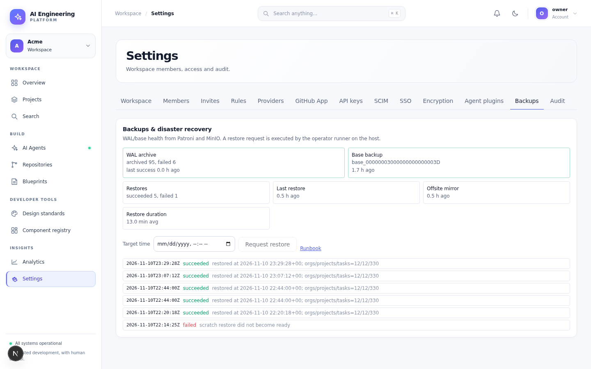

Backups and recovery
Backups are a product surface for operators, not a cron job hidden on a server.

WAL and base backup health, restore history, restore duration and the offsite mirror.
What is protected
- PostgreSQL — WAL archiving plus periodic base backups
- Object storage — artifacts and run evidence
- Configuration — provider and workspace settings in the database
- Audit log — append-only events with export and legal hold
Health indicators
The Settings → Backups panel shows:
| Indicator | Meaning |
|---|---|
| WAL archive | Last archived segment and archive failures |
| Last success | Age of the most recent successful archive |
| Base backup | Name and age of the newest base backup |
| Restores | Succeeded and failed restore requests |
| Restore duration | Average time for a verified restore |
| Offsite mirror | Age of the last successful offsite copy |
Alerts fire when WAL archiving stops, a base backup is stale, a restore is too old or the offsite mirror is behind.
Request a restore
- Open Settings → Backups.
- Choose a target time. It must be after the base backup and covered by archived WAL.
- Select Request restore.
- The restore worker claims the request, starts a scratch instance, replays WAL and verifies row counts.
- The request shows succeeded with the target time and verified counts, or failed with the reason.
A restore is a verification step, not a live cutover. Promoting the restored instance is an operator decision with its own runbook.
Offsite
The WAL and base backup buckets are mirrored to a second MinIO/S3 endpoint. An offsite restore drill proves the mirror is usable, not just present.
Retention
WAL and base backups have a configurable retention period (30 days in the reference deployment). Object storage lifecycle rules should match the retention policy; do not delete a base backup that a restore request may still need.
What to test
- restore to a timestamp before a known change
- restore with the primary unavailable
- restore from the offsite endpoint
- alert when WAL archiving stops
Limits
- A restore cannot target a time before the oldest base backup.
- A target after the last archived WAL is not recoverable; the wait is visible in the panel.
- The scratch restore does not serve production traffic until promoted.